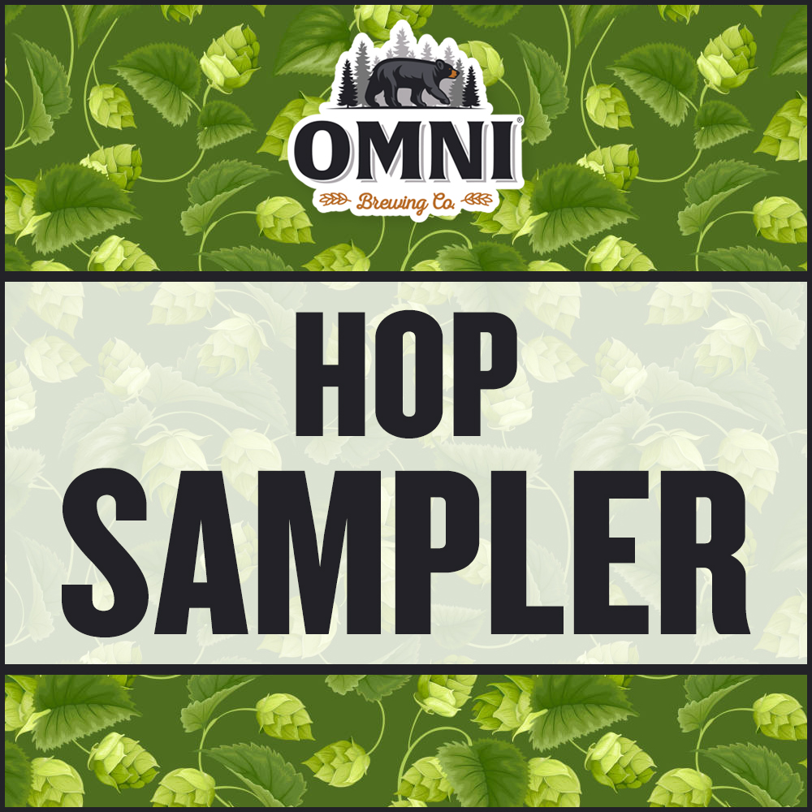
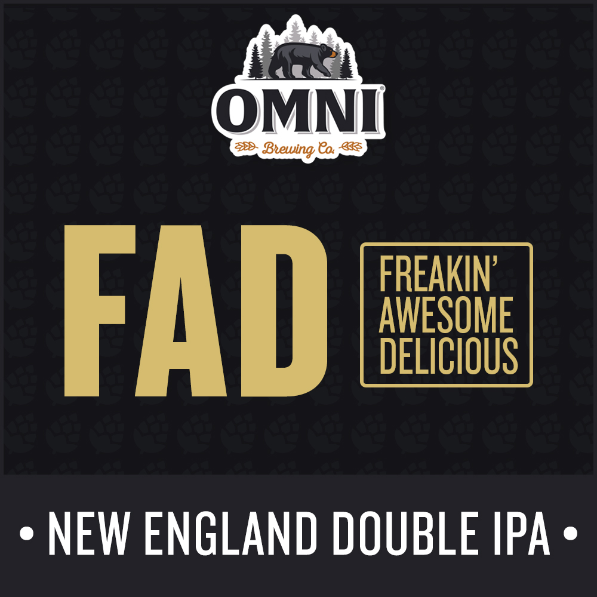
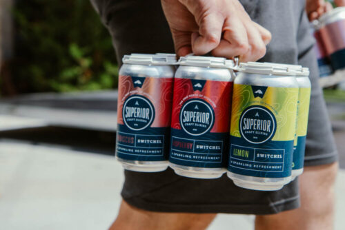
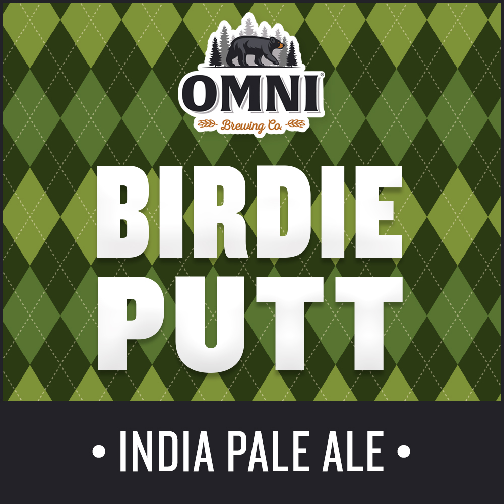

OMNI Hop Sampler Pack
This hop sampler 3-Pack includes one crowler of each of the following:
FAD - This is our new and improved 2nd-anniversary beer that is full of Citra, Mosaic,
and Amarillo Hops. This one has an aroma that is hard to resist. This New England DIPA
is not just a fad, it's Frickin' Awesome & Delicious!
Time Machine - A throwback American IPA paying homage to the great beers of the 90's
and 2000's. Traditional American ale yeast with “old school” hops of Cascade and
Centennial that remind us of simpler times.
Birdie Putt - A perfect IPA for the Links or the Clubhouse.